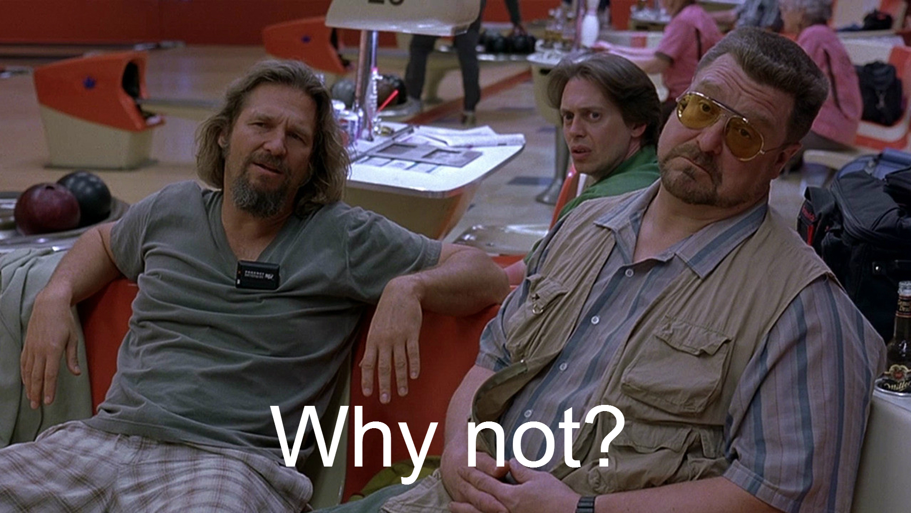

<!DOCTYPE HTML>
<!--[if IE 6]>
<html id="ie6" lang="en-US" class="ie ie6 lt-ie9">
<![endif]-->
<!--[if IE 7]>
<html id="ie7" lang="en-US" class="ie ie7 lt-ie9">
<![endif]-->
<!--[if IE 8]>
<html id="ie8" lang="en-US" class="ie ie8 lt-ie9">
<![endif]-->
<!--[if gte IE 9]>
<html lang="en-US" class="ie ie9">
<![endif]-->
<!--[if !(IE)]><!-->
<html lang="en-US" class="">
<!--<![endif]-->
<head>
	<meta charset="UTF-8">
	<meta name="viewport" content="width=device-width, minimum-scale=1.0, maximum-scale=1.0, user-scalable=no">
	<title>Adapting Viadeo's front end for arabic language behavior</title>
	<link rel="stylesheet" href="../assets/css/reset.css">
	<link rel="stylesheet" href="../css/flowtime.css">
	<link rel="stylesheet" href="style.css">
	<link rel="stylesheet" href="../assets/css/prism.css">
	<link rel="stylesheet" href="http://fonts.googleapis.com/css?family=Stardos+Stencil:400,700" type="text/css" />
</head>
<body class="">
	
	<div class="flowtime">
	
	   <div class="ft-section" data-id="section-0">
			<div id="/section-0/page-1" class="ft-page" data-id="page-1">
				<div class="stack-center">
					<div class="stacked-center">
						<h1>Adapting Viadeo's front end for arabic language behavior</h1>
					</div>
				</div>
			</div>
			<div id="/section-0/page-2" class="ft-page" data-id="page-2">
				<div class="stack-center">
					<div class="stacked-center">
						
					</div>
				</div>
			</div>
	   </div>
	
		<div class="ft-section" data-id="section-1">
			<div id="/section-1/page-1" class="ft-page" data-id="page-1">
				<div class="stack-center">
					<div class="stacked-center">
						<h2>why?</h2>
					</div>
				</div>
			</div>
			<div id="/section-1/page-2" class="ft-page" data-id="page-2">
				<div class="wrapper">
					
					
				</div>
			</div>
			<div id="/section-1/page-3" class="ft-page" data-id="page-3">
				<div class="wrapper">
					<h2>Viadeo</h2>
					<p class="ft-fragment">Volonté d’entrer dans le marché arabe,   
						<div class="ft-fragment">les douleurs actuelles,
							<div class="ft-fragment">volonté de mieux faire,
								<div class="ft-fragment">tester le framework au “charbon”, 
									<div class="ft-fragment">s'adapter à la langue arabe et ses spécificités
									</div>
								</div>
							</div>
						</div>
					</p>
				</div>
			</div>
		</div>
		
		<div class="ft-section" data-id="section-2">
			<div id="/section-2/page-1" class="ft-page" data-id="page-1">
				<div class="stack-center">
					<div class="stacked-center">
						<h1>"Questions" project</h1>
					</div>
				</div>
			</div>
			<div id="/section-2/page-2" class="ft-page" data-id="page-2">
				<div class="wrapper">
					<h2>Analyse de l'existant</h2>
					<ul>
						<li>224 KB (75%) of CSS is not used by the current page.</li>
						<li>coreui.css: 49.0 KB (55%) is not used by the current page.</li>
						<li>coreui-global.css: 138 KB (83%) is not used by the current page.</li>
						<li>-css-global-expressions.css: 1.2 KB (100%) is not used by the current page.</li>
						<li>-css-global-dogearbox.css: 325 B (100%) is not used by the current page.</li>
						<li>-css-projects-apec-widgetApec.css: 3.2 KB (86%) is not used by the current page.</li>
						<li>-css-projects-expert.css: 2.2 KB (73%) is not used by the current page.</li>
						<li>-css-projects-searchengine.css: 10.5 KB (88%) is not used by the current page.</li>
						<li>-css-projects-microblogging.css: 17.3 KB (87%) is not used by the current page.</li>
						<li>-css-projects-questions-questionsearch.css: 1.7 KB (84%) is not used by the current page.</li>
						<li>-css-projects-stickyBar.css: 723 B (100%) is not used by the current page.</li>
					</ul>
					<p><small>Stable project.</small></p>
				</div>
			</div>
			<div id="/section-2/page-3" class="ft-page" data-id="page-3">
				<div class="wrapper">
					<h2>délimiter les besoins (répertoriez tous les éléments UI dont vous avez besoin)</h2>
					<ul>
						<li>utilisation de la grille,</li>
						<li>style inline interdit,</li>
						<li>Limiter les appels aux ressources,</li>
						<li>attention aux dépendances JS et CSS si vous changez ou renommez des classes,</li>
						<li>utilisation des mixins, et si pas possible comment faire ? (fallback class rtl sur body “.rtl & {}</li>
					</ul>
				</div>
			</div>
		</div>
		
		<div class="ft-section" data-id="section-3">
			<div id="/section-3/page-1" class="ft-page" data-id="page-1">
				<div class="stack-center">
					<div class="stacked-center">
						<h1>Bonnes pratiques et points d’attention</h1>
					</div>
				</div>
			</div>
			<div id="/section-3/page-2" class="ft-page" data-id="page-2">
				<div class="wrapper">
					<h2>Use the Tetra force</h2>
					<ul>
    					<li>grid yourself !</li>
    					<li>utiliser les mixins</li>
    					<li>la validation de formulaire existe aussi dans Tetra-UI </li>
					</ul>
				</div>
			</div>
			<div id="/section-3/page-3" class="ft-page" data-id="page-3">
				<div class="wrapper">
					<h2>U must care about</h2>
					<ul>
						<li>attention au contenu caché</li>
						<li>gu-last est sensible à l’utilisation des flottants, 
						<li>utiliser .clr et non .clear pour fermer les flottants (.clear = ancienne dépendance css et obligeant l’utilisation d’une div vide)</li>
						<li>Attention aux images, sprites (inversion des positions lors du passage en rtl, du coup possible décalage background)</li>
						<li>même chose pour les js type slider avec gestion du drag&drop (ne tient pas compte de rtl du coup les calculs peuvent être faussés)</li>
					</ul>
				</div>
			</div>		
		</div>

		<div class="ft-section" data-id="section-4">
		    <div id="/section-4/page-1" class="ft-page" data-id="page-1">
				<div class="stack-center">
					<div class="stacked-center">
						<h1>Bonus</h1>
					</div>
				</div>
			</div>
			<div id="/section-4/page-2" class="ft-page" data-id="page-2">
				<div class="wrapper">
				   <h2>du js dans une jsp !</h2>
				   <pre>

						<v:function>
							Event.observe(window, 'load', function(){
									
								var elts = $$('#tip .left-nav-tip .tip-nav-title');
								
								elts.each(function(elt){
									var handler = elt.down('a');
									var content = elt.next('ul');
									var closed = handler.hasClassName('closed');
									Event.observe(handler, 'click', function(){
										if (closed) {
											content.show();
											content.removeClassName('closed').addClassName('opened');
											handler.removeClassName('closed').addClassName('opened');
										} else {
											content.hide();
											content.removeClassName('opened').addClassName('closed');
											handler.removeClassName('opened').addClassName('closed');
										}
										closed = !closed;
									});
								});
								
							});
						</v:function>

				   </pre>
				</div>
			</div>
			
			<div id="/section-4/page-3" class="ft-page" data-id="page-3">
				<div class="wrapper">
				   <h2>Tableau de mise en forme</h2>

				   <pre>
						<table id="list-items">
					    <tbody>
					      <c:forEach var="item" items="${stepItem.items}">
					          <c:set var="encryptedActionId" value="${v:encryptId(item.actionId)}" />   
					          <c:set var="encryptedMemberId" value="${v:encryptId(item.memberId)}" />
					          <c:set var="unread" value="${item.visible}" />
					          
					      <tr class="list-item ${unread ? "unread" : "read"}">
					        <td class="member vam pas">
					          <!-- member -->
					          <a class="miniprofileTarget photo mrs" href="/profile/${encryptedMemberId}">
					            
					          </a>
					          <div class="details">
					            <a href="/profile/${encryptedMemberId}"><v:text><v:content>${v:uppercaseFirstLetter(item.memberFullName)}</v:content></v:text></a>
					            <br />
					            <span class="gray"><v:text><v:content>${v:longDateFormat(item.creationDate, defaultLanguage, country)}</v:content></v:text></span>
					          </div>  
					        </td>
					        <td class="zone-click subject pas" data-zoneUrl="/action/?actionId=${encryptedActionId}">
					          <!-- subject & date -->
					          <a class="no-prevent${unread ? ' bold' : ''}" href="/action/?actionId=${encryptedActionId}">
					            ${v:displayFullText(item.label, v:flagFirstCharUpcase())}
					          </a>
					          <br/>           
					        </td>
					        <td class="vam icon-status action">
				            <div class="gu gu-1of2 tac">
                    	
                    </div>
                    <div class="gu gu-last tac">
                      <vml:a class="status delete" onclick="return confirmAction('tableaudebord.afficheaction.form.confirm.1');">
                        <span class="helper">
                            <span class="arrow"></span>
                            <v:text tid="messages.actions.content_actions.5" desc="" lang="fr"><v:content>Supprimer</v:content></v:text>
                        </span>
                        <v:url>${redirectPageFree}&action=delete&actionId=${encryptedActionId}</v:url>
                      </vml:a>
                    </div>
					        </td>
					      </tr>       
					      </c:forEach>
					    </tbody>
					  </table>
				   </pre>

				</div>
			</div>
			<div id="/section-4/page-4" class="ft-page" data-id="page-4">
				<div class="wrapper">
				   <h2>Patchworks</h2>

				   <pre>
						<div class="message-subject message-date" style="text-align: left; width: 400px; position: relative; z-index: 10; display: block; min-height: 40px; cursor: default;"onmouseover="this.style.cursor='pointer';" onmouseout="this.style.cursor='default';" onclick="window.location='/miseenrelation/detaildemandeemisetraitee/?requestId=002qyfvc4729o2h'"><a href="/miseenrelation/detaildemandeemisetraitee/?requestId=002qyfvc4729o2h" class="subject"></a><br />
				   </pre>
				   
				</div>
			</div>
			<div id="/section-4/page-5" class="ft-page" data-id="page-5">
				<div class="wrapper">
				   <h2>DIV auto fermante</h2>

				   <pre>
						<div class="clear"/>
				   </pre>
				   
				</div>
			</div>


		</div>
		
		
	</div>

	<script src="../js/brav1toolbox.js"></script>
	<script src="../js/flowtime.js"></script>
	<script src="../assets/js/prism.js"></script>

	<script type="text/javascript">
		// Configuration API test
		// Flowtime.showProgress(true);
		// Flowtime.fragmentsOnSide(true);
		// Flowtime.fragmentsOnBack(true);
		// Flowtime.useHistory(false);
		// Flowtime.slideInPx(true);
		// Flowtime.sectionsSlideToTop(true);
		Flowtime.gridNavigation(false);
		// Flowtime.useOverviewVariant(true);
		// Flowtime.parallaxInPx(true);
		
		// starts the application with configuration options
		Flowtime.start();
	</script>
</body>
</html>
